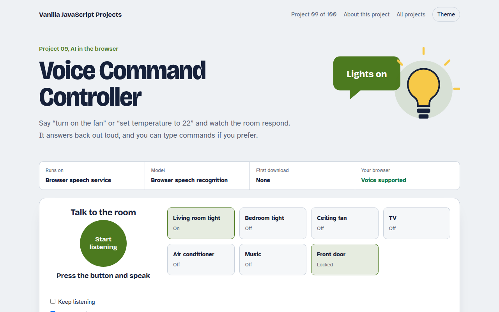

Home / AI in the Browser / Voice Command Controller
Voice Command Controller in JavaScript, Free with Live Demo
Free voice command project in plain JavaScript. Control lights, fan, TV and a door lock by speaking, with spoken replies, using the Web Speech API. Live demo included.

Runs on: Browser speech service. Voice input: Chrome, Edge and Safari (Chrome sends audio to Google's speech service). Typed commands and spoken replies: every modern browser.
What is the Voice Command Controller?
This demo is a smart home dashboard you control by talking. Say turn on the kitchen light, make it cooler, or switch off everything, and the dashboard updates and answers you out loud.
It uses the Web Speech API, which has two parts. SpeechRecognition turns your voice into text, and speechSynthesis reads replies back. A small set of rules matches phrases to actions, so it understands natural wording, not just fixed commands.
Good for
- Hands free controls for kiosks and dashboards
- Accessibility features for your site
- Voice search boxes
- Prototypes for smart home or car apps
What this project does
- Seven devices: two lights, fan, TV, air conditioner, music and door lock
- Natural phrases like “switch off everything” or “make it cooler”
- Spoken replies with speech synthesis, which you can mute
- Keep listening mode for hands-free use
- Type a command when you cannot use the microphone
- Log of every command and whether it was understood
How it works
- ListenSpeechRecognition streams words as you speak, and the final phrase is passed on when you pause.
- UnderstandA small parser finds the action (on, off, set, lock), the device and any number in the phrase.
- Act and replyThe device card updates, the log records the command, and the page speaks a short confirmation.
The key JavaScript
This is the heart of the project. The full file has the rest, including the screen layout and error handling.
const SR = window.SpeechRecognition || window.webkitSpeechRecognition;
const rec = new SR();
rec.lang = "en-US";
rec.interimResults = true;
rec.onresult = (e) => {
const r = e.results[e.results.length - 1];
if (r.isFinal) handle(r[0].transcript); // "turn on the fan"
};
rec.start();
// Talk back
speechSynthesis.speak(new SpeechSynthesisUtterance("Fan is on"));How to use it
- Click Download HTML file above.
- Open the file in a code editor, like VS Code.
- Run it from a local server with
npx serve .so the camera, microphone and AI features are allowed. - Change the text and colors, then upload it to GitHub Pages, Netlify or your own site. It is one file with no build step.
Questions people ask
Does the Web Speech API work in all browsers?
Voice input works in Chrome, Edge and Safari. Firefox does not support it yet, so the demo also lets you type commands. Spoken replies work almost everywhere.
Is my voice sent to a server?
In Chrome, yes: the audio goes to Google's speech service to be turned into text. Safari can process it on the device. The spoken replies are made locally.
Can I add my own commands?
Yes. Commands are simple patterns in the code. Add a new pattern and the action it should run, and the controller picks it up.
More AI in the Browser projects

001. Local AI Chatbot
A private chat assistant that runs on your graphics card
002. Image Classifier
Drop a photo and see what the AI thinks it is
003. Speech to Text Notes
A voice notes app that writes down what you say
004. AI Text Summarizer
Paste a long article and get the key points
005. Smart Writing Assistant
A writing helper that drafts, rewrites and checks your text